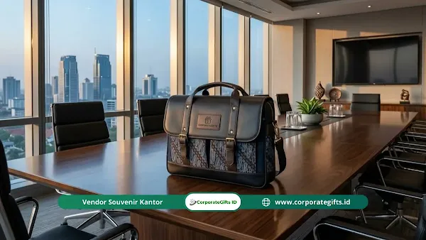

Corporate Gifts ID - Momen kembali bekerja pasca-libur panjang Idul Fitri menjadi momentum penting bagi perusahaan untuk membangkitkan kembali semangat produktivitas kerja tim. Salah satu wujud apresiasi nyata yang kini semakin populer dan terbukti berdampak langsung pada operasional harian adalah tas custom multifungsi souvenir halal bihalal kantor.
Tas custom multifungsi souvenir halal bihalal kantor adalah hadiah korporat berwujud tas hibrida fungsional (dapat berupa ransel, tas jinjing, atau tas selempang) yang dirancang untuk mendukung produktivitas kerja karyawan sekaligus berfungsi sebagai media promosi perusahaan yang efektif pasca-Ramadan. Memberikan souvenir fungsional melalui mitra terpercaya menjadi langkah strategis guna mempererat tali silaturahmi internal dan menyuntikkan energi positif bagi seluruh jajaran staf.
Berbeda dengan kalender atau plakat dekoratif yang cenderung disimpan di sudut meja kerja, perlengkapan kerja fungsional seperti tas hibrida memberikan nilai guna nyata yang dirasakan setiap hari. Memilih paket souvenir kantor yang tepat bukan sekadar menghabiskan sisa alokasi anggaran, melainkan keputusan strategis untuk menciptakan kebanggaan komunal dan menekan angka turnover karyawan.
Poin Kunci Tas Custom Multifungsi Halal Bihalal:
- Desain Hibrida 3-in-1: Fleksibilitas pemakaian sebagai ransel ergonomis, tas jinjing formal, maupun selempang kasual.
- Material Tangguh & Tahan Cuaca: Proteksi perangkat elektronik dan dokumen menggunakan serat cordura dan kanvas water-repellent.
- Personalisasi Merek Berkelas: Penempatan logo perusahaan yang presisi menjadikannya media promosi berjalan yang elegan.
- Investasi Retensi Karyawan: Apresiasi fungsional pasca-lebaran yang menumbuhkan rasa memiliki (sense of belonging) dan loyalitas jangka panjang.
Apa Definisi Tas Custom Multifungsi untuk Kantor?
Tas custom multifungsi sebagai souvenir halal bihalal adalah bentuk cinderamata perusahaan modern yang mengedepankan kepraktisan, estetika, dan ketahanan pakai. Produk ini dirancang untuk menjawab tuntutan mobilitas pekerja masa kini yang kerap berpindah lokasi kerja antara kantor, rumah (sistem kerja hybrid), maupun pertemuan luar ruang bersama klien.
Berikut adalah fitur utama yang menjadikan tas hibrida ini sangat diminati oleh kalangan korporat:
- Desain Konvertibel 3-in-1: Tali penopang dapat disembunyikan atau diatur ulang secara fleksibel sehingga tas dapat bertransformasi menjadi ransel punggung, tas jinjing resmi (briefcase), atau tas selempang kasual.
- Kompartemen Pintar Terintegrasi: Dilengkapi slot laptop khusus berlapis busa peredam kejut tebal, saku penyimpanan gawai, saku botol minum samping, serta kantong tersembunyi antimaling (anti-theft pocket) untuk paspor dan dompet.
- Kustomisasi Material Berkualitas: Fleksibilitas pemilihan bahan sesuai anggaran dan profil acara, mulai dari kanvas katun tebal, serat nilon cordura tahan air, hingga kulit sintetis PU premium.
- Sentuhan Budaya Lokal: Opsi penambahan aksen kain tenun atau batik tradisional nusantara untuk memberikan identitas kultural yang elegan pada acara silaturahmi Idul Fitri.
- Personalisasi Identitas Merek: Aplikasi logo perusahaan melalui teknik bordir komputer presisi, sablon rubber tahan kelupas, atau plat logam etsa timbul berkelas.

Tas kerja multifungsi model briefcase aksen kulit dan motif batik lokal elegan untuk jajaran manajerial dan eksekutif.
Mengapa Memilih Tas Ini Sebagai Hadiah Lebaran Kantor?
Memberikan souvenir tas multifungsi saat perayaan halal bihalal kantor memberikan manfaat ganda, baik dari sudut pandang manajemen personalia (HRD) maupun strategi penguatan citra eksternal perusahaan.
1. Tujuan Utama Pemberian
- Investasi Modal Manusia (Human Capital): Berfungsi sebagai instrumen taktis untuk menunjukkan bahwa perusahaan menghargai kontribusi staf, sekaligus memicu motivasi kerja baru di kuartal berikutnya.
- Memfasilitasi Mobilitas Tim: Memudahkan karyawan membawa perlengkapan digital (laptop, tablet, charger, berkas kontrak) secara aman dan rapi saat menghadiri agenda dinas luar kota.
- Sinergi Promosi Berkelanjutan: Setiap kali karyawan membawa tas tersebut di transportasi publik, kafe, atau ruang pertemuan bisnis, logo perusahaan akan terlihat secara natural oleh audiens yang lebih luas.
2. Manfaat Jangka Panjang bagi Organisasi
- Memperkuat Solidaritas & Kekompakan: Penggunaan tas kerja yang seragam saat acara gathering, pelatihan, dan operasional menciptakan identitas visual yang solid antar-anggota tim.
- Efisiensi dan Produktivitas Tinggi: Perlindungan maksimal terhadap aset elektronik kantor meminimalkan risiko kerusakan laptop saat mobilitas kerja harian.
- Mendukung Retensi Karyawan: Apresiasi nyata dalam bentuk barang bernilai guna tinggi menumbuhkan loyalitas mendalam dan menekan niat karyawan untuk berpindah tempat kerja.
Karakteristik & Spesifikasi Tas Custom Multifungsi Kantor
Agar pengadaan tas kantor berhasil optimal, tim merchandise perusahaan perlu mencermati standar spesifikasi teknis berikut:
- Sistem Tali & Bantalan Ergonomis: Menggunakan busa jaring sirkulasi udara (air mesh) pada bagian punggung dan tali pundak agar beban terbagi merata tanpa memicu rasa pegal.
- Ketahanan Cuaca Tropis (Water-Repellent): Lapisan laminasi anti-air pada kain luar mencegah kelembapan dan air hujan merembes ke kompartemen utama gawai.
- Jahitan Penguat Ganda (Bartack): Setiap titik temu tali, pegangan atas, dan sambungan ritsleting diperkuat dengan jahitan pengunci agar mampu menahan beban berat hingga 10-15 kg.
- Aksesoris Ritsleting & Logam Kuat: Memakai kepala ritsleting anti-macet berstandar industri serta kait tali berbahan logam nikel antikarat.
Tabel Karakteristik & Segmentasi Tas Custom Multifungsi
Berikut adalah panduan segmentasi pemilihan model tas custom multifungsi berdasarkan divisi dan tingkat anggaran pengadaan korporat:
| Tipe / Model Tas | Material Utama | Target Divisi / Penerima | Keunggulan Utama | Estimasi Biaya / Unit |
|---|---|---|---|---|
| Ransel Hibrida 3-in-1 | Cordura 1000D / Nilon Balistik | Staf Lapangan, IT, Tim Komuter | Sangat tangguh, kompartemen laptop 15.6 inch, water-repellent | Rp150.000 - Rp280.000 |
| Briefcase Eksekutif Multifungsi | Kulit Sintetis PU Premium + Aksen Logam | Manajerial, Dewan Direksi, Klien VIP | Tampilan formal prestisius, slot dokumen rapi, emboss logo mewah | Rp250.000 - Rp450.000 |
| Tote Bag Kanvas Multifungsi | Kanvas Twill Tebal 12oz + Lining Torin | Staf Kreatif, Event Organizer, HRD | Desain kasual trendi, ringan, ramah lingkungan, muat banyak | Rp85.000 - Rp160.000 |
| Tas Selempang Messenger Tech | Polyester D600 + Hard Foam Shell | Tim Sales, Operasional, Logistik | Akses cepat satu tangan, saku tablet busa, ringan dan ramping | Rp110.000 - Rp220.000 |
Cara Memetakan Penerima Bingkisan Kantor
Agar alokasi anggaran tepat sasaran dan memberikan dampak emosional maksimal, lakukan pemetaan profil penerima sebelum menentukan desain:
- Garda Operasional & Generasi Muda: Model ransel punggung hibrida berbahan cordura tahan banting menjadi solusi ideal bagi staf dinamis yang mengandalkan transportasi sepeda motor atau kereta listrik harian.
- Jajaran Pimpinan & Manajerial: Model briefcase beraksen kulit dengan slot kartu nama dan kompartemen laptop minimalis untuk mempertegas wibawa kepemimpinan saat memasuki ruang rapat dewan direksi.
- Mitra Kerjasama & Stakeholder Eksternal: Pengemasan tas dalam kotak rigid hard box eksklusif yang dipadukan dengan pita satin dan kartu apresiasi resmi pimpinan perusahaan.
Tips Pengadaan & Manajemen Logistik Souvenir Halal Bihalal
Penerapan manajemen proyek pengadaan massal yang sistematis akan menjamin kualitas barang bebas cacat dan pengiriman tepat waktu:
- Analisis Kebutuhan Komparatif: Diskusikan proporsi ukuran tas dan kebutuhan kompartemen dengan perwakilan divisi agar spesifikasi barang relevan dengan aktivitas riil.
- Prioritaskan Uji Sampel Fisik (Dummy Sampling): Mintalah contoh fisik (*sample proofing*) kepada vendor sebelum proses produksi massal dijalankan untuk memeriksa kualitas jahitan dan ketepatan warna logo.
- Disiplin Manajemen Waktu: Kunci Surat Perintah Kerja (SPK/PO) minimal 6-8 minggu sebelum hari pelaksanaan halal bihalal untuk mengantisipasi tingginya antrean workshop manufaktur menjelang musim pasca-Ramadan.
- Lengkapi dengan Kartu Personalisasi: Tambahkan kartu ucapan bertanda tangan manajemen di dalam tas guna menyisipkan kehangatan personal dalam paket hadiah korporat tersebut.
Kesimpulan Praktis
Menjadikan tas custom multifungsi sebagai souvenir halal bihalal kantor adalah keputusan strategis yang menguntungkan kedua belah pihak. Karyawan memperoleh alat bantu kerja harian yang nyaman, aman, dan membanggakan, sementara perusahaan meraih keuntungan berupa peningkatan loyalitas staf, penguatan ikatan komunal, dan sarana promosi merek berbiaya efektif.
Pastikan Anda bermitra dengan vendor terpercaya yang memiliki legalitas badan usaha resmi, kapasitas produksi skala besar, serta garansi jaminan mutu untuk menjamin kesuksesan agenda silaturahmi korporat Anda.